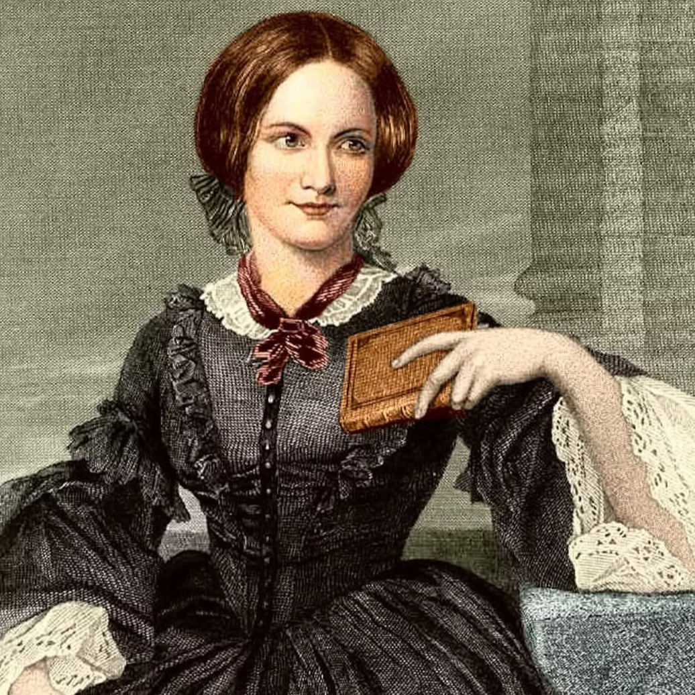
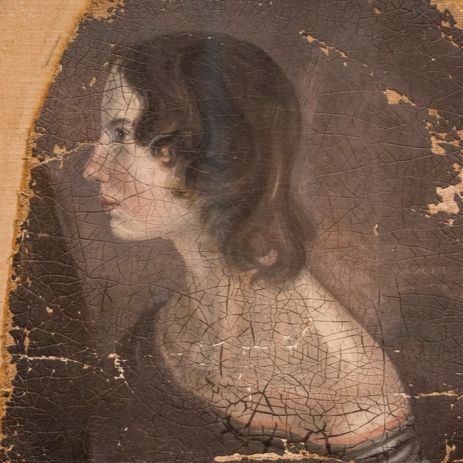

The Brontë sisters, from remote Haworth in the north of England, have a literary legacy that has spanned over 200 years. All three sisters, Charlotte, Emily, and Anne were forced to publish under male pseudonyms, and their themes and subject matter were considered shocking for their time. But the Brontë's writing revealed that agency, potential, and inner resolve was at the heart of the Victorian woman.

Charlotte Brontë
The eldest Brontë sister achieved literary fame in her lifetime, and was the main voice in the preservation of her sisters legacies. She is known primarily for Jane Eyre.
Read More →
Emily Brontë
The enigmatic middle sister known for her intense psychological landscapes, fierce originality, and her gothic masterpiece, Wuthering Heights.
Read More →
Anne Brontë
The youngest and most socially observant sister, her bold writing challenged such as The Tenant of Wildfell Hallchallenged Victorian norms regarding womens rights.
Read More →